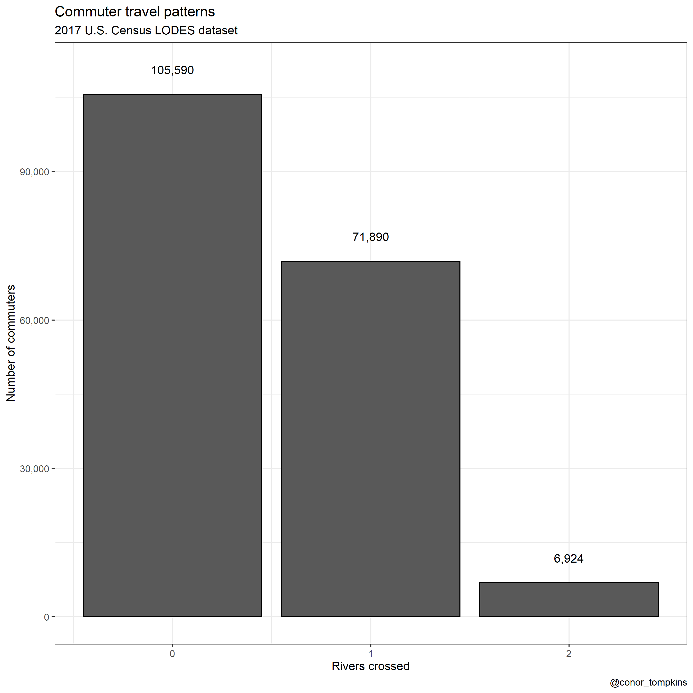
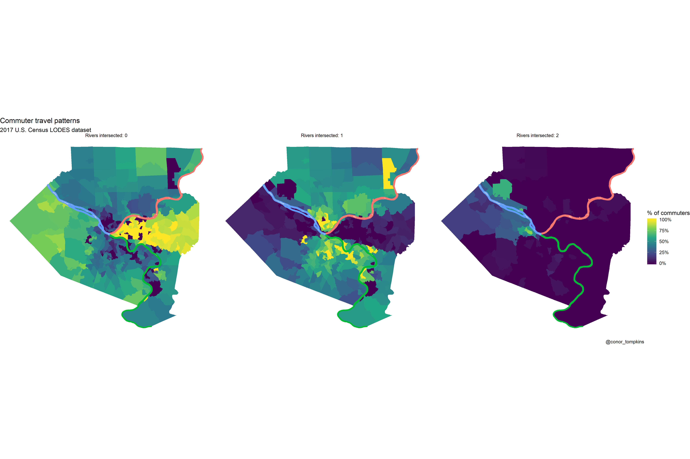
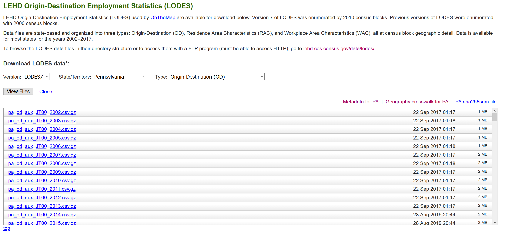

library(tidyverse)
library(vroom)
library(sf)
library(tigris)
library(tidycensus)
library(tidygraph)
library(ggraph)This post focuses on how many rivers Pittsburghers cross to get to work. I use the U.S. Census Bureau LEHD Origin-Destination Employment Statistics (LODES) dataset to draw lines between “home” census tracts and “work” census tracts, and then count how many “commuter lines” intersect with the 3 main rivers in Pittsburgh. This calculation is done in straight lines “as the crow flies”, not accounting for actual road routes.
TLDR
A plurality of commuters don’t cross any rivers, and none cross three. 

Many commuters in the Golden Triangle and neighborhoods to the east don’t cross rivers to get to work. Commuters from the North and South Hills areas usually cross one river. Commuters from Sewickley, Coraopolis, and those that live close to the airport are most likely to cross two rivers.
Data munging and analysis
I use the “pa_od_aux_JT00_2017.csv” file as shown here: 
In my analysis I use many of the standard {tidyverse} packages, {sf}, {tidycensus}, {tidygraph}, and {ggraph}:
The first step is to read in the geographies crosswalk:
geo_crosswalk <- vroom("post_data/pa_xwalk.csv.gz", col_types = cols(.default = "c"))
geo_crosswalk# A tibble: 421,545 × 43
tabblk2010 st stusps stname cty ctyname trct trctname bgrp bgrpname
<chr> <chr> <chr> <chr> <chr> <chr> <chr> <chr> <chr> <chr>
1 420912030002… 42 PA Penns… 42091 Montgo… 4209… 2030 (M… 4209… 2 (Trac…
2 420912070013… 42 PA Penns… 42091 Montgo… 4209… 2070.01… 4209… 3 (Trac…
3 420912070013… 42 PA Penns… 42091 Montgo… 4209… 2070.01… 4209… 3 (Trac…
4 420710144022… 42 PA Penns… 42071 Lancas… 4207… 144.02 … 4207… 2 (Trac…
5 420710144022… 42 PA Penns… 42071 Lancas… 4207… 144.02 … 4207… 2 (Trac…
6 420710134002… 42 PA Penns… 42071 Lancas… 4207… 134 (La… 4207… 2 (Trac…
7 420710144022… 42 PA Penns… 42071 Lancas… 4207… 144.02 … 4207… 2 (Trac…
8 420710144022… 42 PA Penns… 42071 Lancas… 4207… 144.02 … 4207… 2 (Trac…
9 420710144022… 42 PA Penns… 42071 Lancas… 4207… 144.02 … 4207… 2 (Trac…
10 420710144022… 42 PA Penns… 42071 Lancas… 4207… 144.02 … 4207… 2 (Trac…
# ℹ 421,535 more rows
# ℹ 33 more variables: cbsa <chr>, cbsaname <chr>, zcta <chr>, zctaname <chr>,
# stplc <chr>, stplcname <chr>, ctycsub <chr>, ctycsubname <chr>,
# stcd116 <chr>, stcd116name <chr>, stsldl <chr>, stsldlname <chr>,
# stsldu <chr>, stslduname <chr>, stschool <chr>, stschoolname <chr>,
# stsecon <chr>, stseconname <chr>, trib <chr>, tribname <chr>, tsub <chr>,
# tsubname <chr>, stanrc <chr>, stanrcname <chr>, necta <chr>, …This downloads the census tract shapefiles:
allegheny_tracts <- get_decennial(geography = "tract",
variables = c(total_pop = "P001001"),
state = "PA",
county = "Allegheny County",
geometry = TRUE,
output = "wide",
year = 2010)
allegheny_tractsSimple feature collection with 402 features and 3 fields
Geometry type: MULTIPOLYGON
Dimension: XY
Bounding box: xmin: -80.36087 ymin: 40.19435 xmax: -79.68885 ymax: 40.67494
Geodetic CRS: NAD83
# A tibble: 402 × 4
GEOID NAME total_pop geometry
<chr> <chr> <dbl> <MULTIPOLYGON [°]>
1 42003412002 Census Tract 4120.02, Allegh… 4865 (((-80.07936 40.58043, -…
2 42003413100 Census Tract 4131, Allegheny… 6609 (((-80.06788 40.60846, -…
3 42003413300 Census Tract 4133, Allegheny… 4742 (((-80.03822 40.55349, -…
4 42003416000 Census Tract 4160, Allegheny… 1636 (((-79.77054 40.56028, -…
5 42003417200 Census Tract 4172, Allegheny… 1260 (((-79.78122 40.54113, -…
6 42003423000 Census Tract 4230, Allegheny… 2801 (((-79.90692 40.4871, -7…
7 42003426800 Census Tract 4268, Allegheny… 5369 (((-79.94408 40.53137, -…
8 42003428100 Census Tract 4281, Allegheny… 1242 (((-79.97941 40.47738, -…
9 42003429500 Census Tract 4295, Allegheny… 4212 (((-80.01937 40.55063, -…
10 42003431100 Census Tract 4311, Allegheny… 3380 (((-80.05242 40.49402, -…
# ℹ 392 more rowsThis is the shapefile of the rivers:
rivers <- st_read("post_data/Allegheny_County_Major_Rivers/Allegheny_County_Major_Rivers.shp") %>%
group_by(NAME) %>%
summarize() %>%
filter(!is.na(NAME))Reading layer `Allegheny_County_Major_Rivers' from data source
`/Users/conorotompkins/Documents/github_repos/ctompkins_quarto_blog/posts/how-many-pittsburghers-cross-the-river-to-get-to-work/post_data/Allegheny_County_Major_Rivers/Allegheny_County_Major_Rivers.shp'
using driver `ESRI Shapefile'
Simple feature collection with 4 features and 4 fields
Geometry type: POLYGON
Dimension: XY
Bounding box: xmin: -80.23017 ymin: 40.19435 xmax: -79.68877 ymax: 40.66965
Geodetic CRS: WGS 84riversSimple feature collection with 3 features and 1 field
Geometry type: POLYGON
Dimension: XY
Bounding box: xmin: -80.23017 ymin: 40.19435 xmax: -79.68877 ymax: 40.66965
Geodetic CRS: WGS 84
# A tibble: 3 × 2
NAME geometry
* <chr> <POLYGON [°]>
1 Allegheny River ((-80.01324 40.44201, -80.01323 40.44203, -80.01316 40.4421…
2 Monongahela River ((-80.01541 40.43983, -80.01531 40.43984, -80.01519 40.4396…
3 Ohio River ((-80.01329 40.44192, -80.01423 40.4447, -80.01433 40.4447,…These are the rivers:
rivers %>%
ggplot() +
geom_sf(aes(color = NAME), show.legend = FALSE) +
geom_sf_label(aes(label = NAME, fill = NAME), show.legend = FALSE) +
theme_graph()This shows the outlines of the tracts used in the analysis.
allegheny_tracts %>%
ggplot() +
geom_sf() +
theme_minimal()Next I read in the main LODES data. This is a big file, so it takes a moment.
df <- vroom("post_data/pa_od_main_JT00_2017.csv.gz", col_types = cols(.default = "c")) %>%
mutate(S000 = as.numeric(S000)) %>%
select(h_geocode, w_geocode, S000)
df# A tibble: 5,034,208 × 3
h_geocode w_geocode S000
<chr> <chr> <dbl>
1 420010301022005 420010301011003 1
2 420010303002001 420010301011003 1
3 420010301023038 420010301011012 1
4 420010314011078 420010301011012 1
5 420010301011027 420010301011016 1
6 420010301011033 420010301011016 1
7 420010301011038 420010301011016 1
8 420010301011116 420010301011016 1
9 420010301011123 420010301011016 1
10 420010302001018 420010301011016 1
# ℹ 5,034,198 more rowsNext I summarize the number of commuters per home-work tract combination. The original file uses census block codes, which are too granular for this analysis. I link the blocks to census tracts and aggregate to that level.
df_tracts_summarized <- df %>%
group_by(h_geocode, w_geocode) %>%
summarize(commuters = sum(S000)) %>%
ungroup() %>%
arrange(desc(commuters))
df_tracts_summarized <- df_tracts_summarized %>%
left_join(geo_crosswalk %>% select(tabblk2010, trct), by = c("h_geocode" = "tabblk2010")) %>%
rename(h_tract = trct) %>%
left_join(geo_crosswalk %>% select(tabblk2010, trct), by = c("w_geocode" = "tabblk2010")) %>%
rename(w_tract = trct)
df_tracts_summarized <- df_tracts_summarized %>%
group_by(h_tract, w_tract) %>%
summarize(commuters = sum(commuters)) %>%
ungroup() %>%
arrange(desc(commuters))
df_tracts_summarized <- df_tracts_summarized %>%
semi_join(allegheny_tracts, by = c("h_tract" = "GEOID")) %>%
semi_join(allegheny_tracts, by = c("w_tract" = "GEOID"))
# df_tracts_summarized %>%
# summarize(jobs = sum(commuters))
# 479006 total commutersThis code finds the center of each tract, which I use as the nodes in the network plots:
allegheny_tracts <- allegheny_tracts %>%
arrange(GEOID)
allegheny_tracts_centroids <- cbind(allegheny_tracts,
st_coordinates(st_centroid(allegheny_tracts))) %>%
st_set_geometry(NULL) %>%
as_tibble() %>%
rename(x = X,
y = Y) %>%
select(GEOID, x, y)This shows that the centroids correctly appear in the center of each tract:
allegheny_tracts %>%
ggplot() +
geom_sf() +
geom_point(data = allegheny_tracts_centroids, aes(x, y), size = .2) +
geom_sf(data = rivers, aes(color = NAME), show.legend = FALSE) +
geom_sf_label(data = rivers, aes(color = NAME, label = NAME),
show.legend = FALSE) +
theme_void()Here I filter on commuter lines that have at least 25 commuters.
g <- df_tracts_summarized %>%
as_tbl_graph(directed = TRUE) %>%
activate(edges) %>%
filter(commuters > 25)
g# A tbl_graph: 402 nodes and 2969 edges
#
# A directed multigraph with 17 components
#
# Edge Data: 2,969 × 3 (active)
from to commuters
<int> <int> <dbl>
1 1 1 723
2 2 1 620
3 2 2 488
4 3 1 487
5 4 1 442
6 5 1 399
7 6 1 371
8 7 1 364
9 8 1 358
10 9 1 355
# ℹ 2,959 more rows
#
# Node Data: 402 × 1
name
<chr>
1 42003020100
2 42003409000
3 42003191800
# ℹ 399 more rows# df_tracts_summarized %>%
# as_tbl_graph(directed = TRUE) %>%
# activate(edges) %>%
# filter(commuters > 25) %>%
# as_tibble() %>%
# summarize(jobs = sum(commuters))
# 184404 total commutersHere I set a manual layout for the ggraph object. I use the centroids of the census tracts as the nodes in the network graph.
node_pos <- allegheny_tracts_centroids
manual_layout <- create_layout(graph = g,
layout = node_pos)
manual_layout %>%
as_tibble()# A tibble: 402 × 7
GEOID x y name .ggraph.orig_index .ggraph.index circular
<chr> <dbl> <dbl> <chr> <int> <int> <lgl>
1 42003010300 -80.0 40.4 42003020100 1 1 FALSE
2 42003020100 -80.0 40.4 42003409000 2 2 FALSE
3 42003020300 -80.0 40.5 42003191800 3 3 FALSE
4 42003030500 -80.0 40.4 42003412001 4 4 FALSE
5 42003040200 -80.0 40.4 42003411000 5 5 FALSE
6 42003040400 -79.9 40.4 42003456003 6 6 FALSE
7 42003040500 -80.0 40.4 42003191700 7 7 FALSE
8 42003040600 -80.0 40.4 42003413100 8 8 FALSE
9 42003040900 -80.0 40.4 42003473100 9 9 FALSE
10 42003050100 -80.0 40.4 42003426300 10 10 FALSE
# ℹ 392 more rowsThis graphs the commuter lines on top of the census tracts and rivers:
ggraph(manual_layout) +
geom_sf(data = allegheny_tracts, color = "dark grey", fill = NA) +
geom_sf(data = rivers, aes(color = NAME), show.legend = FALSE) +
geom_edge_fan(aes(edge_width = log10(commuters),
edge_alpha = log10(commuters)),
arrow = arrow(length = unit(.5, 'lines')),
start_cap = circle(.1, 'lines'),
end_cap = circle(.2, 'lines'),
color = "white",
strength = .5) +
scale_edge_width_continuous(range = c(.1, 1)) +
scale_edge_alpha_continuous(range = c(.01, .4)) +
labs(x = NULL,
y = NULL,
title = "Where do people commute from/to for work?",
subtitle = "Excludes within-tract commuters",
caption = "Based on 2017 US Census LODES dataset | @conor_tompkins") +
theme_graph() +
theme(legend.background = element_rect(fill = "black"),
legend.text = element_text(color = "white"),
legend.title = element_text(color = "white"),
panel.background = element_rect(fill = "black"))This calculates the centroids I will use to draw lines later on:
allegheny_lines <- cbind(allegheny_tracts, st_coordinates(st_centroid(allegheny_tracts))) %>%
select(-c(NAME, total_pop)) %>%
st_drop_geometry()
allegheny_lines %>%
ggplot() +
geom_point(aes(X, Y)) +
theme_minimal()Here I calculate the edges and nodes for the network graph:
df_edges <- g %>%
activate(edges) %>%
as_tibble()
# df_edges %>%
# summarize(commuters = sum(commuters))
# 184404 total commuters
df_nodes <- g %>%
activate(nodes) %>%
as_tibble() %>%
mutate(id = row_number())The df_lines is pivoted long so there is a “to” and “from” row for each commuter line:
df_lines <- df_edges %>%
mutate(line_id = row_number()) %>%
pivot_longer(c(from, to), names_to = "point_type", values_to = "edge_id")
df_lines# A tibble: 5,938 × 4
commuters line_id point_type edge_id
<dbl> <int> <chr> <int>
1 723 1 from 1
2 723 1 to 1
3 620 2 from 2
4 620 2 to 1
5 488 3 from 2
6 488 3 to 2
7 487 4 from 3
8 487 4 to 1
9 442 5 from 4
10 442 5 to 1
# ℹ 5,928 more rows# df_lines %>%
# distinct(line_id, commuters) %>%
# summarize(jobs = sum(commuters))
# 184404 total commutersSince some commuter “lines” are really just points that start and end at the same centroid, I separate the commuter “lines” from the “points” for purposes of manipulating the geometries.
df_line_types <- df_lines %>%
pivot_wider(names_from = point_type, values_from = edge_id) %>%
mutate(line_type = case_when(from == to ~ "point",
from != to ~ "linestring")) %>%
pivot_longer(cols = c(from, to), names_to = "edge_type", values_to = "edge_id")
df_line_types# A tibble: 5,938 × 5
commuters line_id line_type edge_type edge_id
<dbl> <int> <chr> <chr> <int>
1 723 1 point from 1
2 723 1 point to 1
3 620 2 linestring from 2
4 620 2 linestring to 1
5 488 3 point from 2
6 488 3 point to 2
7 487 4 linestring from 3
8 487 4 linestring to 1
9 442 5 linestring from 4
10 442 5 linestring to 1
# ℹ 5,928 more rows# df_line_types %>%
# distinct(line_id, commuters) %>%
# summarize(commuters = sum(commuters))
# # 184404 total commutersdf_linestrings <- df_line_types %>%
filter(line_type == "linestring")
df_points <- df_line_types %>%
filter(line_type == "point")This creates the geometries for the lines, points, and rivers. Then I set them all to the same coordinate system with st_set_crs.
df_linestrings <- df_linestrings %>%
left_join(df_nodes, by = c("edge_id" = "id")) %>%
left_join(allegheny_lines, by = c("name" = "GEOID")) %>%
st_as_sf(coords = c("X", "Y")) %>%
group_by(line_id, commuters) %>%
summarise() %>% # union points into lines using our created lineid
st_cast("LINESTRING") %>%
st_set_crs(4326)
# df_linestrings %>%
# ungroup() %>%
# st_drop_geometry() %>%
# summarize(commuters = sum(commuters))
# 167409 commuters that change tracts
df_points <- df_points %>%
left_join(df_nodes, by = c("edge_id" = "id")) %>%
left_join(allegheny_lines, by = c("name" = "GEOID")) %>%
st_as_sf(coords = c("X", "Y")) %>%
group_by(line_id, commuters) %>%
summarise() %>%
st_cast("POINT") %>%
st_set_crs(4326)
# df_points %>%
# ungroup() %>%
# st_drop_geometry() %>%
# summarize(commuters = sum(commuters))
# 16995 commuters that stay within a tractrivers <- rivers %>%
st_set_crs(4326)Here I calculate which commuter lines intersect with which rivers using st_intersects:
df_linestrings_intersect <- df_linestrings %>%
ungroup() %>%
mutate(intersects_ohio = st_intersects(., rivers %>%
filter(NAME == "Ohio River")) %>% as.logical(),
intersects_allegheny = st_intersects(., rivers %>%
filter(NAME == "Allegheny River")) %>% as.logical(),
intersects_monongahela = st_intersects(., rivers %>%
filter(NAME == "Monongahela River")) %>% as.logical())
df_commuter_rivers <- df_linestrings_intersect %>%
pivot_longer(c(contains("intersects")), names_to = "river_intersected", values_to = "value") %>%
mutate(value = case_when(is.na(value) ~ FALSE,
!is.na(value) ~ value))
# df_commuter_rivers %>%
# distinct(line_id, commuters) %>%
# summarize(jobs = sum(commuters))
# 167409 commuters that change tractsThis shows that the intersection calculation was successful:
df_commuter_rivers %>%
filter(value == TRUE) %>%
ggplot() +
geom_sf(data = allegheny_tracts, color = NA, show.legend = FALSE) +
geom_sf(data = rivers,
aes(color = NAME),
show.legend = FALSE) +
geom_sf(aes(geometry = geometry,
size = commuters),
show.legend = TRUE) +
facet_wrap(~river_intersected,
ncol = 1) +
guides(color = FALSE,
size = FALSE) +
theme_graph() +
scale_size_continuous(range = c(.1, .5))This combines the dataframes with the lines and points, and then summarizes to count how many of the geometries intersected with a river:
#this was double counting
df_commuter_rivers_combined <- df_commuter_rivers %>%
bind_rows(df_points %>%
mutate(value = FALSE))
#use for lookup
df_lines_that_cross_rivers <- df_commuter_rivers_combined %>%
group_by(line_id) %>%
summarize(rivers_crossed = sum(value)) %>%
ungroup()
#find the distinct line_ids and then summarize
df_commuter_rivers_summary <- df_commuter_rivers_combined %>%
distinct(line_id, commuters) %>%
left_join(df_lines_that_cross_rivers) %>%
group_by(rivers_crossed) %>%
summarize(commuters = sum(commuters)) %>%
ungroup()
# df_commuter_rivers_summary %>%
# summarize(commuters = sum(commuters))
# 184404 total commuters
df_commuter_rivers_summary %>%
ggplot(aes(rivers_crossed, commuters)) +
geom_col(color = "black") +
geom_text(aes(y = commuters + 5000, label = scales::comma(commuters))) +
scale_y_continuous(labels = scales::comma) +
labs(title = "Commuter travel patterns",
subtitle = "2017 U.S. Census LODES dataset",
x = "Rivers crossed",
y = "Number of commuters",
caption = "@conor_tompkins") +
theme_bw()It is always reassuring when your analysis doesn’t stray to far from conventional wisdom. Very few Pittsburghers in the dataset cross two rivers to get to work, and none cross three.
Mapping commuter patterns
The next step is to put this data on a map, since it is obviously spatial. The goal is to calculate the percentage of each census tract’s “from” commuters that crossed zero, one, two, and 3 rivers.
This prepares the edge data to be used to make a chloropleth map:
df_lines_chloro <- df_edges %>%
mutate(line_id = row_number()) %>%
pivot_longer(c(from, to), names_to = "point_type", values_to = "edge_id")
df_lines_chloro# A tibble: 5,938 × 4
commuters line_id point_type edge_id
<dbl> <int> <chr> <int>
1 723 1 from 1
2 723 1 to 1
3 620 2 from 2
4 620 2 to 1
5 488 3 from 2
6 488 3 to 2
7 487 4 from 3
8 487 4 to 1
9 442 5 from 4
10 442 5 to 1
# ℹ 5,928 more rows# df_lines_chloro %>%
# distinct(line_id, commuters) %>%
# summarize(commuters = sum(commuters))
# 184404 total commutersThe next few steps are largely just coercing the geometry to do what I want it to do. Interested parties can read the code.
df_line_types_chloro <- df_lines_chloro %>%
pivot_wider(names_from = point_type, values_from = edge_id) %>%
mutate(line_type = case_when(from == to ~ "point",
from != to ~ "linestring")) %>%
pivot_longer(cols = c(from, to), names_to = "edge_type", values_to = "edge_id")
# df_line_types_chloro %>%
# distinct(line_id, commuters) %>%
# summarize(commuters = sum(commuters))
#184404 total commutersdf_linestrings_chloro <- df_line_types_chloro %>%
filter(line_type == "linestring")
# df_linestrings_chloro %>%
# distinct(line_id, commuters) %>%
# summarize(commuters = sum(commuters))
#167409 commuters that change tracts
df_linestrings_chloro_lookup <- df_linestrings_chloro %>%
select(line_id, edge_type, edge_id) %>%
pivot_wider(names_from = edge_type, values_from = edge_id)
df_points_chloro <- df_line_types %>%
filter(line_type == "point")
# df_points_chloro %>%
# distinct(line_id, commuters) %>%
# summarize(commuters = sum(commuters))
#16995 commuters that stay within a tractdf_linestrings_chloro <- df_linestrings_chloro %>%
left_join(df_nodes, by = c("edge_id" = "id")) %>%
left_join(allegheny_lines, by = c("name" = "GEOID")) %>%
st_as_sf(coords = c("X", "Y")) %>%
group_by(line_id, commuters) %>%
summarise() %>% # union points into lines using our created lineid
st_cast("LINESTRING") %>%
st_set_crs(4326) %>%
left_join(df_linestrings_chloro_lookup, by = c("line_id" = "line_id")) %>%
left_join(df_nodes, by = c("from" = "id")) %>%
left_join(allegheny_lines, by = c("name" = "GEOID"))
# df_linestrings_chloro %>%
# ungroup() %>%
# st_drop_geometry() %>%
# summarize(commuters = sum(commuters))
#167409 commuters that change tracts
df_points_chloro <- df_points_chloro %>%
left_join(df_nodes, by = c("edge_id" = "id")) %>%
left_join(allegheny_lines, by = c("name" = "GEOID")) %>%
st_as_sf(coords = c("X", "Y")) %>%
group_by(line_id, name, commuters) %>%
st_cast("POINT") %>%
st_set_crs(4326)
# df_points_chloro %>%
# ungroup() %>%
# st_drop_geometry() %>%
# distinct(line_id, commuters) %>%
# summarize(commuters = sum(commuters))
#16995 commuters that stay within a tractdf_linestrings_chloro_intersect <- df_linestrings_chloro %>%
ungroup() %>%
mutate(intersects_ohio = st_intersects(., rivers %>%
filter(NAME == "Ohio River")) %>% as.logical(),
intersects_allegheny = st_intersects(., rivers %>%
filter(NAME == "Allegheny River")) %>% as.logical(),
intersects_monongahela = st_intersects(., rivers %>%
filter(NAME == "Monongahela River")) %>% as.logical()) %>%
st_set_geometry(NULL) %>%
select(-c(from, to)) %>%
rename(from = name)
# df_linestrings_chloro_intersect %>%
# summarize(commuters = sum(commuters))
#167409 commuters that change tractsdf_linestrings_chloro_intersect <- df_linestrings_chloro_intersect %>%
mutate_at(vars(contains("intersect")), ~case_when(is.na(.) ~ FALSE,
!is.na(.) ~ .)) %>%
mutate(no_intersect = case_when(intersects_allegheny == FALSE & intersects_monongahela == FALSE & intersects_ohio == FALSE ~ TRUE,
TRUE ~ FALSE)) %>%
select(line_id, from, contains("intersect"), commuters) %>%
pivot_longer(contains("intersect"), names_to = "river_intersected", values_to = "value")
# df_linestrings_chloro_intersect %>%
# distinct(line_id, commuters) %>%
# summarize(commuters = sum(commuters))
#167409 commuters that change tractsdf_linestrings_chloro_intersect <- df_linestrings_chloro_intersect %>%
mutate(commuters = case_when(value == FALSE ~ 0,
TRUE ~ commuters))
# df_linestrings_chloro_intersect %>%
# distinct(line_id, commuters) %>%
# summarize(commuters = sum(commuters))
#167409 commuters that change tractsdf_linestrings_chloro_intersect <- df_linestrings_chloro_intersect %>%
filter(value == TRUE) %>%
group_by(line_id, from, commuters) %>%
summarize(count_rivers_intersected = sum(river_intersected != "no_intersect")) %>%
ungroup()
# df_linestrings_chloro_intersect %>%
# summarize(commuters = sum(commuters))
#167409 commuters that change tracts df_points_chloro <- cbind(df_points_chloro, st_coordinates(st_centroid(df_points_chloro))) %>%
st_drop_geometry() %>%
rename(from = name) %>%
distinct(from, line_id, commuters) %>%
mutate(count_rivers_intersected = 0)
# df_points_chloro %>%
# summarize(commuters = sum(commuters))
#16995 commuters that stay within a tractdf_combined <- bind_rows(df_linestrings_chloro_intersect, df_points_chloro)
# df_combined %>%
# filter(is.na(from))
#
# df_combined %>%
# summarize(commuters = sum(commuters))
#184404 total commutersdf_combined <- df_combined %>%
arrange(from, desc(count_rivers_intersected), desc(commuters))These are the final steps to create the chloropleth:
df_combined# A tibble: 2,969 × 4
line_id from commuters count_rivers_intersected
<int> <chr> <dbl> <dbl>
1 748 42003010300 63 0
2 2192 42003020100 31 2
3 1372 42003020100 42 1
4 2282 42003020100 30 1
5 1 42003020100 723 0
6 632 42003020100 70 0
7 730 42003020100 64 0
8 1102 42003020100 49 0
9 1761 42003020100 36 0
10 350 42003020300 112 0
# ℹ 2,959 more rowsThis counts the number of commuters per “from” tract and “count of rivers intersected”. Note that there are multiple rows per “from” tract.
df_chloro_map <- df_combined %>%
ungroup() %>%
group_by(from, count_rivers_intersected) %>%
summarize(total_commuters = sum(commuters)) %>%
ungroup()
df_chloro_map# A tibble: 723 × 3
from count_rivers_intersected total_commuters
<chr> <dbl> <dbl>
1 42003010300 0 63
2 42003020100 0 942
3 42003020100 1 72
4 42003020100 2 31
5 42003020300 0 258
6 42003030500 0 231
7 42003040200 0 143
8 42003040400 0 108
9 42003040500 0 87
10 42003040600 0 59
# ℹ 713 more rows# df_chloro_map %>%
# filter(is.na(count_rivers_intersected))
#
# df_chloro_map %>%
# summarize(commuters = sum(total_commuters))
#184404 total commutersThe next step is to calculate the percent of a “from” tract’s commuters that crossed a given number of rivers:
df_chloro_map <- df_chloro_map %>%
group_by(from) %>%
mutate(pct_of_commuters = total_commuters / sum(total_commuters)) %>%
ungroup()
df_chloro_map# A tibble: 723 × 4
from count_rivers_intersected total_commuters pct_of_commuters
<chr> <dbl> <dbl> <dbl>
1 42003010300 0 63 1
2 42003020100 0 942 0.901
3 42003020100 1 72 0.0689
4 42003020100 2 31 0.0297
5 42003020300 0 258 1
6 42003030500 0 231 1
7 42003040200 0 143 1
8 42003040400 0 108 1
9 42003040500 0 87 1
10 42003040600 0 59 1
# ℹ 713 more rows# df_chloro_map %>%
# summarize(commuters = sum(total_commuters))
#184404 total commutersThen I join df_chloro_map against the census tract geometry to get a complete list of all the tracts. I use complete to add rows for combinations of “from” tracts and count_rivers_intersected that did not appear in the data. Those added rows are given 0 for pct_of_commuters and total_commuters.
df_chloro_map <- df_chloro_map %>%
right_join(allegheny_tracts %>% select(GEOID) %>% st_set_geometry(NULL), by = c("from" = "GEOID")) %>%
complete(from, count_rivers_intersected = c(0, 1, 2)) %>%
filter(!is.na(count_rivers_intersected)) %>% #exclude tracts brought in from the right_join
replace_na(list(pct_of_commuters = 0, total_commuters = 0))
# df_chloro_map %>%
# filter(is.na(count_rivers_intersected))
#
# df_chloro_map %>%
# summarize(commuters = sum(total_commuters, na.rm = TRUE))
#184404 total commutersThe final step is to right join againt the census tract data to bring over the geometry.
df_chloro_map <- df_chloro_map %>%
right_join(allegheny_tracts, by = c("from" = "GEOID"))
glimpse(df_chloro_map)Rows: 1,206
Columns: 7
$ from <chr> "42003010300", "42003010300", "42003010300", …
$ count_rivers_intersected <dbl> 0, 1, 2, 0, 1, 2, 0, 1, 2, 0, 1, 2, 0, 1, 2, …
$ total_commuters <dbl> 63, 0, 0, 942, 72, 31, 258, 0, 0, 231, 0, 0, …
$ pct_of_commuters <dbl> 1.00000000, 0.00000000, 0.00000000, 0.9014354…
$ NAME <chr> "Census Tract 103, Allegheny County, Pennsylv…
$ total_pop <dbl> 6600, 6600, 6600, 3629, 3629, 3629, 616, 616,…
$ geometry <MULTIPOLYGON [°]> MULTIPOLYGON (((-79.98077 4..., …df_chloro_map %>%
mutate(count_rivers_intersected = str_c("Rivers intersected:", count_rivers_intersected, sep = " ")) %>%
ggplot() +
geom_sf(aes(geometry = geometry,
fill = pct_of_commuters),
color = NA) +
geom_sf(data = rivers,
aes(color = NAME),
size = 1,
show.legend = FALSE) +
facet_wrap(~count_rivers_intersected,
nrow = 1) +
scale_fill_viridis_c("% of commuters",
labels = scales::percent) +
labs(title = "Commuter travel patterns",
subtitle = "2017 U.S. Census LODES dataset",
caption = "@conor_tompkins") +
theme_void()Errata
The previous version of the bar chart double counted the commuters. This is the old version:
df_commuter_rivers_summary <- df_commuter_rivers %>%
bind_rows(df_points %>%
mutate(value = FALSE)) %>%
group_by(line_id) %>%
summarize(rivers_crossed = sum(value),
commuters = sum(commuters))
df_commuter_rivers_summary %>%
st_drop_geometry() %>%
group_by(rivers_crossed) %>%
summarize(commuters = sum(commuters)) %>%
ggplot(aes(rivers_crossed, commuters)) +
geom_col() +
scale_y_continuous(labels = scales::comma) +
labs(title = "Commuter travel patterns",
subtitle = "2017 U.S. Census LODES dataset",
x = "Rivers crossed",
y = "Number of commuters",
caption = "@conor_tompkins") +
theme_bw()A similar but less impactful bug affected the chloropleth chart. For completeness, this is the old verison of that graph:
References
- https://lehd.ces.census.gov/data/
- https://lehd.ces.census.gov/data/lodes/LODES7/LODESTechDoc7.4.pdf
- https://lehd.ces.census.gov/doc/workshop/2017/Presentations/TheaEvans.pdf
- https://medium.com/@urban_institute/open-accessible-data-on-jobs-and-workers-tract-level-lodes-data-945fcac9e280